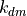

Computation of ideal channel capacity¶
Compute the information gain possible due to deterministic (noise-free) time integration of the transcript expression during translation.
import numpy as np
import scipy.stats as st
import scripts.BA_C as bao
import math
import random as rand
import matplotlib.pyplot as plt
import pandas as pd
import os, sys
Parameters to compute the output of the deterministic integration channel. Leakiness, 0<l<1, which determines the rate of leaky transcription in the absence of the environmental input, X. Frequency parameter, alpha>0, which determines the rate at which operator (O) switches between 0 and 1 states.
= Transcription rate constant  = Transcript decay rate constant
= Set of protein decay rate constant, which determines
the range of integration times,  .
.
= Input code length in bits. uniformly
spaced values of the input in the domain ![[0,1]](_images/math/a7b17d1c3442224393b5a845ae344dbe542593d7.png) .
.
l = 0.01
alpha = 1.0
k_m = 0.5
k_dm = 0.5
k_dgs = [0.5,0.2,0.1,0.05,0.02,0.01,0.005,0.002,0.001,0.0005,0.0002]
tag = str(int(k_m/k_dm))
T = np.array([k_dm/k for k in k_dgs])
HX = 6
X = np.linspace(0,1.0,int(2**HX))
# Replicates
reps = 1
Compute parameters for the transcript expression distribution as shown in, So, L. H., Ghosh, A., Zong, C., Sepúlveda, L. A., Segev, R., & Golding, I. (2011). General properties of transcriptional time series in Escherichia coli. Nature genetics, 43(6), 554-560.
Rate constants for operator activity/inactivity:
, which ranges for  to 1,
when
to 1,
when  changes from 0 to 1. ,
which changes from to 0, when changes from 0 to 1.
changes from 0 to 1. ,
which changes from to 0, when changes from 0 to 1.
Using , ,  , and
, we compute the parameters for the Negative Binomial
distribution,
, and
, we compute the parameters for the Negative Binomial
distribution,  = number of failures
= number of failures  = the probability
of success
= the probability
of success
r_params = np.zeros(shape=(X.shape[0],2))
for i in range(0,X.shape[0]):
k_on = alpha*((1-l)*X[i] + l)
k_off = alpha*(1 - X[i])*(1 - l)
m = (k_m/k_dm)*k_on/(k_on + k_off)
b = 1 + (k_dm*k_off*m)/(k_on*(k_on+k_off+k_dm))
beta = b - 1
if beta>0.0:
r_params[i,0] = m/beta
r_params[i,1] = (b - 1.0)/b
else:
r_params[i,0] = m
r_params[i,1] = 0.0
bin_size = 100
n_samples = 1000000
all_cs = np.zeros(shape=(T.shape[0],1+reps))
all_cs[:,0] = T
for rr in range(0,reps):
for it in range(0,T.shape[0]):
t = T[it]
# create bins
if r_params[0,1]>0.0:
g_min = st.nbinom.ppf(0.01,r_params[0,0]*t,1-r_params[0,1])
else:
g_min = st.poisson.ppf(0.01,r_params[0,0]*t)
if r_params[-1,1]>0.0:
g_max = st.nbinom.ppf(0.99,r_params[-1,0]*t,1-r_params[-1,1])
else:
g_max = st.poisson.ppf(0.99,r_params[-1,0]*t)
bin_size = min(200,g_max - g_min + 1)
g_bin_edges = np.linspace(g_min,g_max+1,bin_size+1)
g_locs_i = g_bin_edges.astype(int)
g_pdfs = np.zeros(shape=(r_params.shape[0],g_locs_i.shape[0]))
for i in range(0,r_params.shape[0]):
if r_params[i,1]>0.0:
p = r_params[i,1]
r = r_params[i,0]*t
l_cdf = st.nbinom.cdf(g_locs_i,r,1-p,0)
else:
r = r_params[i,0]*t
l_cdf = st.poisson.cdf(g_locs_i,r,0)
l_pdf = l_cdf
l_pdf[1:] = l_pdf[1:] - l_pdf[:-1]
g_pdfs[i,:] = l_pdf/np.sum(l_pdf)
c_g, e, p = bao.get_CC(g_pdfs)
all_cs[it,0] = t
all_cs[it,rr+1] = c_g
/usr/local/lib/python3.7/site-packages/ipykernel_launcher.py:18: DeprecationWarning: object of type <class 'numpy.float64'> cannot be safely interpreted as an integer.
fig = plt.figure(figsize=(5,4))
plt.plot(all_cs[:,0],all_cs[:,1],marker='.',ms=10)
plt.xscale('log')
plt.xlabel(r'Integration time, $T=k_{d,m}/k_{d,g}$',size=16)
plt.ylabel(r'$c(X;g_{\mathrm{ideal}})$',size=16)
plt.tick_params(labelsize=16)